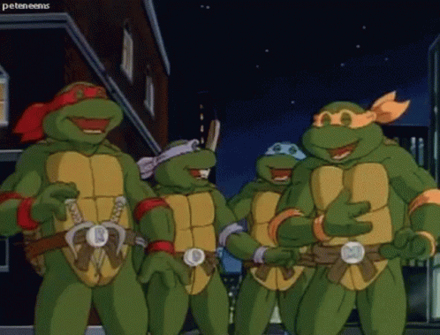
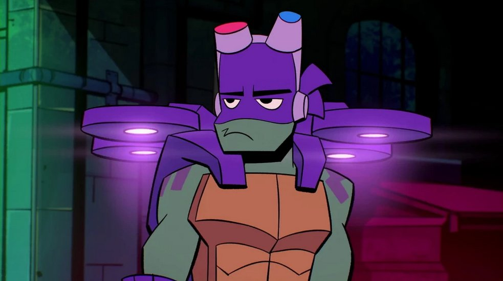

Comic History
*Donnatello as a comic cover*

In the original (1984) Mirage comics, Donatello was the smartest brother, often building tech to aid missions. Unlike later versions, early comics portrayed him as equally violent in combat. His character evolved significantly in Archie's TMNT Adventures (1989), emphasizing his genius and pacifist leanings which reflects how he is potrayed even today.
Donatello's family
*Donnatello laughing with his brothers*
Donatello shares a close bond with his 3 brothers, Raphael, Michelangelo and Leonardo as well as their rat sensei 'Splinter'. Despite their friendship he is occasionally clashing with hot-headed Raphael, however he maintains a particularly strong partnership with Leonardo. Their family dynamic centers on mutual loyalty despite differing personalities.
TV history
*Donnatello in 'TMNT: Mutant Mayhem'*
In the animated series, Donatello's tech skills shine brightest. The (1987) cartoon made him the nerdy gadgeteer, while the (2003) version added combat prowess. Rise of the TMNT (2012) reimagined him as a mystic-tech hybrid, and Mutant Mayhem (2023) highlights his social awkwardness. All iterations emphasize his inventive genius and purple bandana.